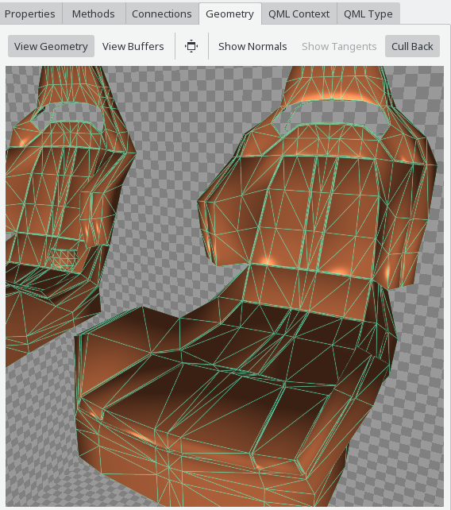
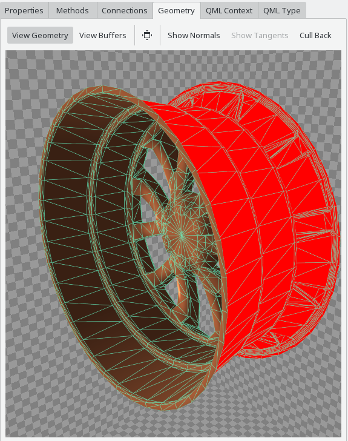
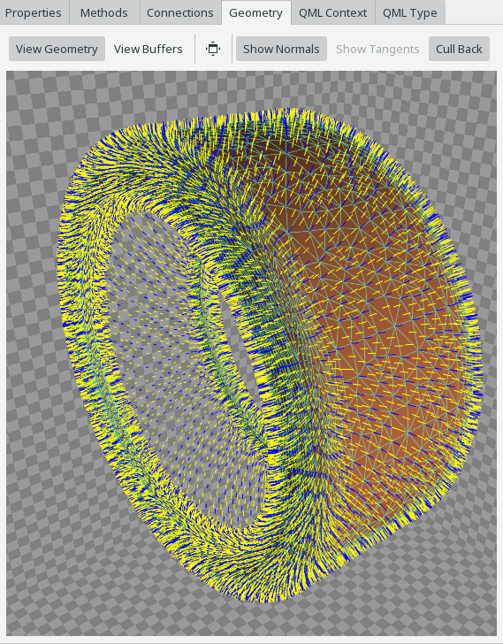
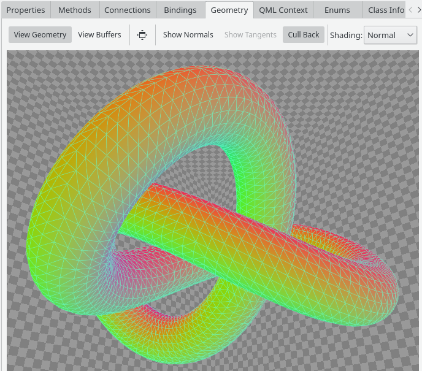
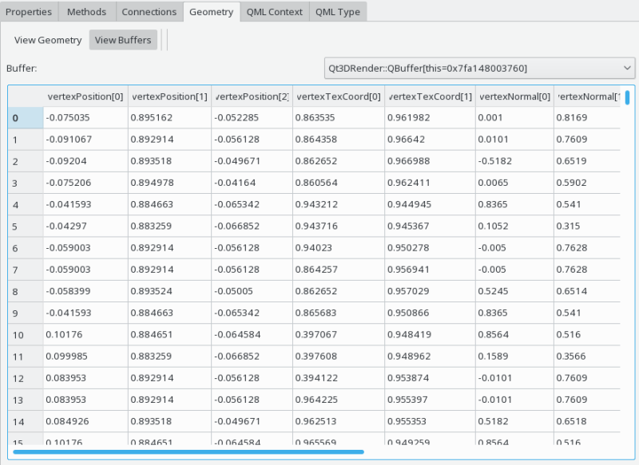

The Qt 3D geometry inspector allows you to look at vertices and their associated attributes used by the Qt 3D renderer in various ways. The geometry inspector is available when one of the following objects has been selected:

The Qt 3D geometry inspector provides a wireframe view of the vertices, as well as a raw buffer view. It is most easily accessible from within the entity tree view of the Qt3D Inspector.
The wireframe view supports a number of interactions:
The wireframe view by default does backface culling as the renderer would do as well. This can be disabled via the corresponding action in the toolbar at the top of the wireframe view. The culled faces are then shown in red, like in the following screenshot.

The Qt 3D geometry inspector can also visualize normal vectors, assuming there is a corresponding Qt3DRender::QAttribute present in the vertex buffer. Normal vector visualization is enabled using the corresponding toolbar action in the wireframe view.

Vertex normals are shown in blue, face normals are shown in yellow.
The 3D geometry view can use a number of different diagnostic shading modes to highlight specific aspects of the vertex data. Some shading modes depend on the availability of specific vertex data (such as normals, texture coordinates or tangents), and are only selectable if corresponding vertex attributes exist.

The diagnostic shading mode can be selected using the Shading combobox in the toolbar.
You can switch to the raw buffer view in the toolbar on top of the Qt 3D geometry inspection view. A combobox as the top allows you to select the Qt3DRender::QBuffer instance to inspect, typically there is one or more vertex buffer and one index buffer present.
The buffer view shows a tables with the buffer data decoded based on its associated Qt3DRender::QAttribute instances, resulting in one or more columns per attribute.

The following examples make use of the Qt 3D geometry inspector: